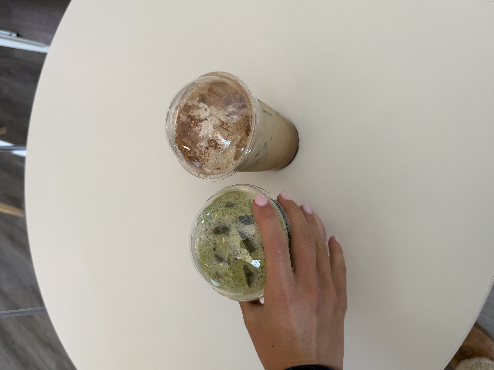
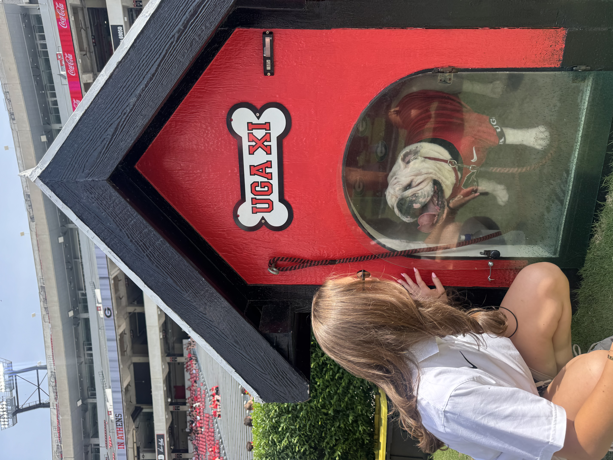
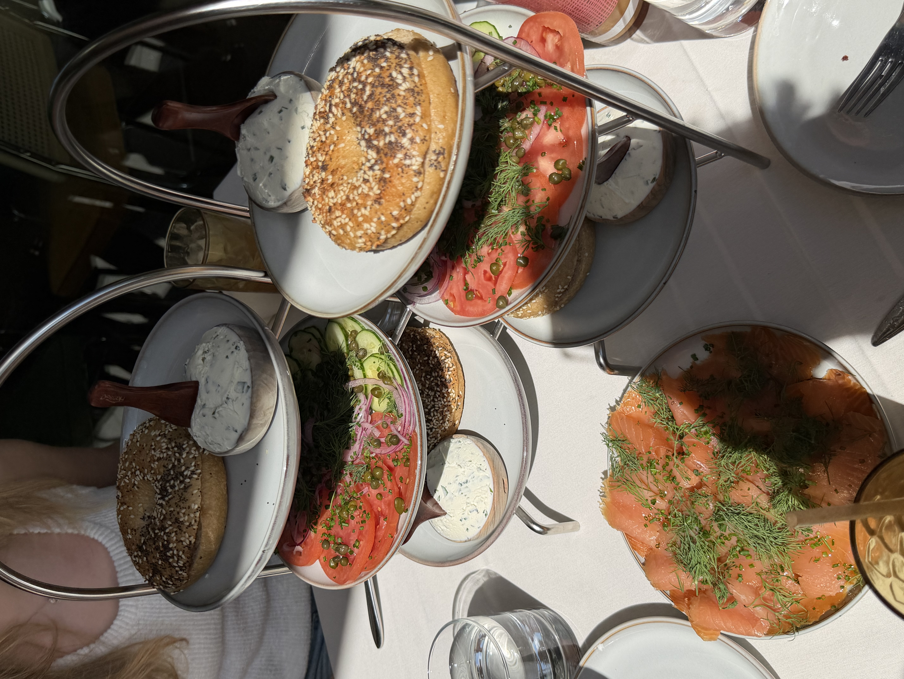
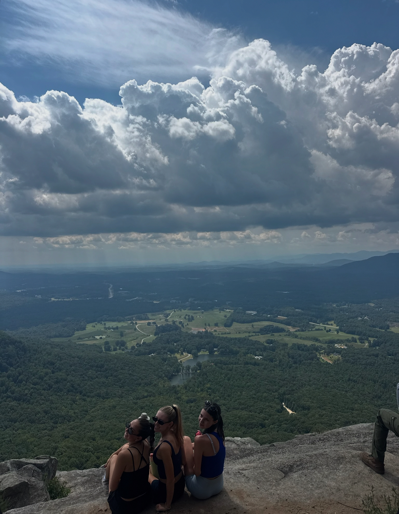
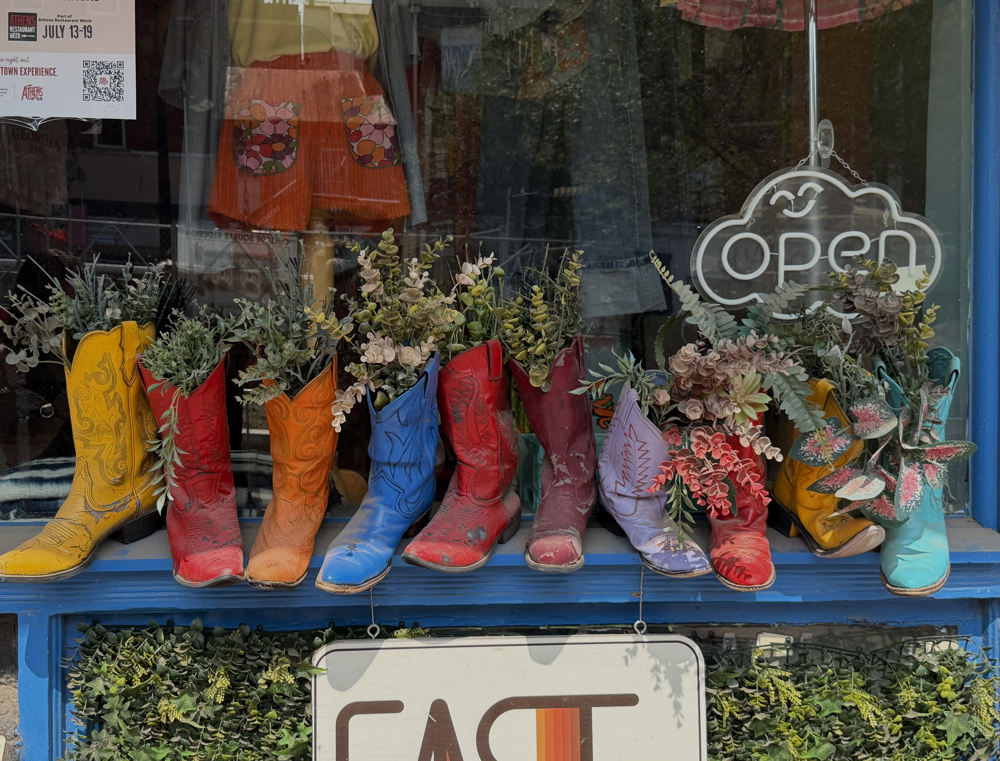

Every study session in Athens starts the same way: somebody's holding a latte with a flavor that didn't exist last year. The menus here get weird in the best way, and these are the spots worth your punch card. Click here for our list

Kickoff sets the schedule for everyone, whether you have a ticket or not. Where to park, where to watch, and where to get the best outfits..Click here more

Breakfast that's worth the wait, dinner that's worth the reservation, and enough late-night options to survive a Tuesday. Sorted by when you're hungry, not by price.Click here for more

Botanical gardens, record stores, walks. The stuff that fills the hours between meals and makes the town feel like more than a campus.Click here for more

Three floors of vintage denim, boutiques that stock things you won't see on anyone else, and lots of very specific stores for red and black. Downtown does most of the work. Click here for more
The Athens Edit is a guide to the parts of this town worth your time. Not the tourist-brochure version, not the ranked-list version, just the coffee shops, restaurants, shops, and corners that people here actually go back to. Everything on this site was picked by hand and written by somebody who's been there. Athens is small enough to know well and strange enough to keep surprising you, and this is our attempt at putting that on a page.
Back Home